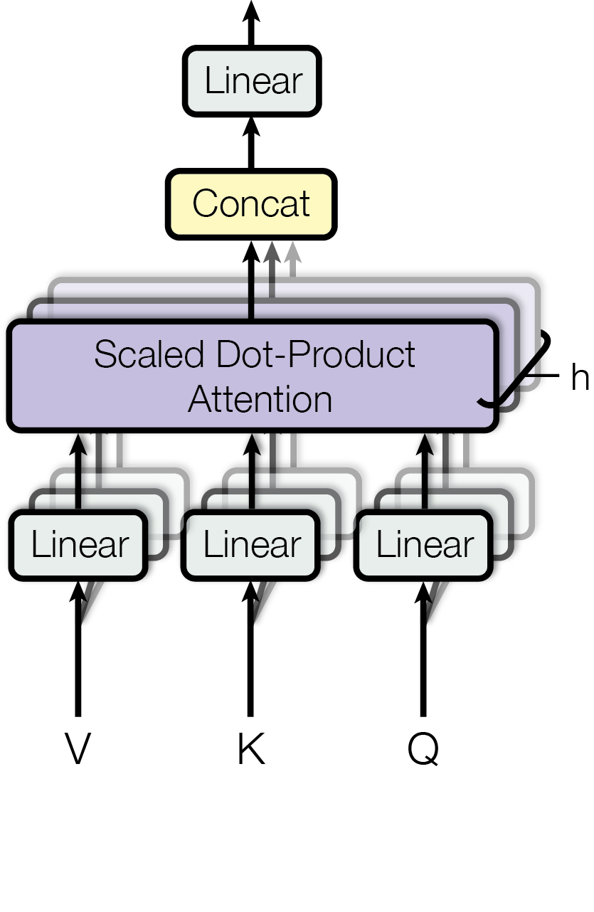

在这里，我们通过Google论文《Attention is all you need》中给出的方法，利用Pytorch框架给出的轮子来实现Transformer的整体网络架构。
Transformer的整体网络架构
让我们来看看Transformer的整体网络架构：整个Transformer网络包含左右两个部分，即Encoder和Decoder。输入数据通过token Embedding和位置编码后进入编码器和解码器网络结构，解码器最后通过线性层和Softmax操作完成一次输出。而解码器之前时刻的输出就又可以作为下一时候的输入（Shifted Right）。

对于Encoder部分来说其内部主要以6个相同的模块堆叠而成，每一个模块由两部分网络所构成：多头注意力机制和两层前馈神经网络。同时，对于这两部分网络来说，都加入了残差连接，并且在残差连接后还进行了层归一化操作。同样，Decoder层也采用了6个完全相同的网络层堆叠而成，其整体上与Encoder类似，只是多了一个用于与Encoder输出进行交互的多头注意力机制。
Embedding 实现
Token Embedding：这里是实现字符转向量的一种常用做法。
1
2
3
4
5
6
7
8class TokenEmbedding(nn.Module):
def __init__(self, vocab_size, emb_size):
super(TokenEmbedding, self).__init__()
self.embedding = nn.Embedding(vocab_size, emb_size)
self.emb_size = emb_size
def forward(self, tokens):
return self.embedding(tokens.long()) * math.sqrt(self.emb_size)Positional Embedding：位置编码，按照论文中给出的以下公式，并将含有指数部分的参数进行对数变换。
变换后的结果如下：
下面我们进行位置编码的实现，首先初始化一个全0的位置矩阵，并指定了一个序列的最大长度，然后计算每个维度（每一列）的相关位置信息，并在位置矩阵中取与输入序列长度相等的前
x_len行，再加上Token Embedding的结果，最后返回矩阵进行Dropout操作后得到的结果。1
2
3
4
5
6
7
8
9
10
11
12
13
14
15
16class PositionalEncoding(nn.Module):
def __init__(self, d_model, dropout=0.1, max_len=5000):
super(PositionalEncoding, self).__init__()
self.dropout = nn.Dropout(p=dropout)
pe = torch.zeros(max_len, d_model) # [max_len, d_model]
position = torch.arange(0, max_len, dtype=torch.float).unsqueeze(1) # [max_len, 1]
div_term = torch.exp(torch.arange(0, d_model, 2).float() * (-math.log(10000.0) / d_model))
# [d_model/2]
pe[:, 0::2] = torch.sin(position * div_term) # [max_len, d_model/2]
pe[:, 1::2] = torch.cos(position * div_term)
pe = pe.unsqueeze(0).transpose(0, 1) # [max_len, 1, d_model]
self.register_buffer('pe', pe)
def forward(self, x):
x = x + self.pe[:x.size(0), :] # [x_len, batch_size, d_model]
return self.dropout(x)
多头注意力机制的实现

如上图所示，多头注意力机制其实就是将原始的输入序列进行多组的自注意力处理过程；然后再将每一组自注意力的结果拼接起来进行一次线性变换得到最终的输出结果。具体的，其计算公式为：
其中，
并且，
多头注意力机制中最为重要的就是自注意力机制，也就是需要前计算得到Q、K和V，然后再根据Q、K、V来计算得到最终的注意力编码。所谓的自注意力机制其实就是论文中所指代的“Scaled Dot-Product Attention“。

在论文中作者说道，注意力机制可以描述为将query和一系列的key-value对映射到某个输出的过程，而这个输出的向量就是根据query和key计算得到的权重作用于value上的权重和。具体的，对于输入Q、K和V来说，其输出向量的计算公式为：
下面我们进行多头注意力的实现：
1 | class MultiHeadedAttention(nn.Module): |
接下来，我们分五个阶段定义多头注意力机制前向传播的实现：
第一阶段： 计算得到Q、K、V
1
2
3
4# 第一阶段： 计算得到Q、K、V
q = F.linear(query, self.q_proj_weight)
k = F.linear(key, self.k_proj_weight)
v = F.linear(value, self.v_proj_weight)第二阶段： 缩放，以及attn_mask维度判断
1
2
3
4
5
6
7
8
9
10
11
12
13
14# 第二阶段： 缩放，以及attn_mask维度判断
tgt_len, bsz, embed_dim = query.size()
src_len = key.size(0)
head_dim = embed_dim // self.num_heads
scaling = float(head_dim) ** -0.5
q = q * scaling
if attn_mask is not None:
if attn_mask.dim() == 2:
attn_mask = attn_mask.unsqueeze(0)
if list(attn_mask.size()) != [1, query.size(0), key.size(0)]:
raise RuntimeError('The size of the 2D attn_mask is not correct.')
elif attn_mask.dim() == 3:
if list(attn_mask.size()) != [bsz * self.num_heads, query.size(0), key.size(0)]:
raise RuntimeError('The size of the 3D attn_mask is not correct.')第三阶段： 计算得到注意力权重矩阵
1
2
3
4
5
6
7
8
9# 第三阶段： 计算得到注意力权重矩阵
q = q.contiguous().view(tgt_len, bsz * self.num_heads, head_dim).transpose(0, 1)
# [batch_size * num_heads,tgt_len,kdim]
# 因为前面是num_heads个头一起参与的计算，所以这里要进行一下变形，以便于后面计算。 且同时交换了0，1两个维度
k = k.contiguous().view(-1, bsz*self.num_heads, head_dim).transpose(0,1)
#[batch_size * num_heads,src_len,kdim]
v = v.contiguous().view(-1, bsz*self.num_heads, head_dim).transpose(0,1)
#[batch_size * num_heads,src_len,vdim]
attn_output_weights = torch.bmm(q, k.transpose(1, 2))第四阶段： 进行相关掩码操作
1
2
3
4
5
6
7
8# 第四阶段： 进行相关掩码操作
if attn_mask is not None:
attn_output_weights += attn_mask
if key_padding_mask is not None:
attn_output_weights = attn_output_weights.view(bsz, self.num_heads, tgt_len, src_len)
attn_output_weights = attn_output_weights.masked_fill(
key_padding_mask.unsqueeze(1).unsqueeze(2), float('-inf'))
attn_output_weights = attn_output_weights.view(bsz * self.num_heads, tgt_len,src_len)最后，对权重矩阵进行归一化操作，并计算得到多头注意力机制的输出
1
2
3
4
5
6
7
8
9
10
11
12attn_output_weights = F.softmax(attn_output_weights, dim=-1)
# [batch_size * num_heads, tgt_len, src_len]
attn_output_weights = F.dropout(attn_output_weights, p=self.dropout, training=self.training)
attn_output = torch.bmm(attn_output_weights, v)
# 这就是num_heads个Attention(Q,K,V)结果
attn_output = attn_output.transpose(0, 1).contiguous().view(tgt_len, bsz, embed_dim)
attn_output_weights = attn_output_weights.view(bsz, self.num_heads, tgt_len, src_len)
Z = F.linear(attn_output, self.out_proj.weight, self.out_proj.bias)
# 这里就是多个z 线性组合成Z [tgt_len,batch_size,embed_dim]
return Z, attn_output_weights.sum(dim=1) / self.num_heads # 将num_heads个注意力权重矩阵按对应维度取平均
Transformer实现
在完成Embedding和MultiHeadedAttention部分的设计后，我们就可以正式搭建Transformer的网络结构。对于Transformer网络的实现一共会包含4个部分：TransformerEncoderLayer、TransformerEncoder、TransformerDecoderLayer和TransformerDecoder，其分别表示定义一个单独编码层、构造由多个编码层组合得到的编码器、定义一个单独的解码层以及构造由多个解码层得到的解码器。
TransformerEncoderLayer层实现
1
2
3
4
5
6
7
8
9
10
11
12
13
14
15
16
17
18
19
20
21
22
23
24
25
26class TransformerEncoderLayer(nn.Module):
def __init__(self, d_model, nhead, dim_feedforward=2048, dropout=0.1):
super(TransformerEncoderLayer, self).__init__()
self.self_attn = MultiHeadedAttention(d_model, nhead, dropout=dropout)
self.dropout1 = nn.Dropout(dropout)
self.norm1 = nn.LayerNorm(d_model)
self.linear1 = nn.Linear(d_model, dim_feedforward)
self.dropout = nn.Dropout(dropout)
self.linear2 = nn.Linear(dim_feedforward, d_model)
self.activation = F.relu
self.dropout2 = nn.Dropout(dropout)
self.norm2 = nn.LayerNorm(d_model)
def forward(self, src, src_mask=None, src_key_padding_mask=None):
src2 = self.self_attn(src, src, src, attn_mask=src_mask,
key_padding_mask=src_key_padding_mask)[0] # 计算多头注意力
src = src + self.dropout1(src2) # 残差连接
src = self.norm1(src)
src2 = self.activation(self.linear1(src))
src2 = self.linear2(self.dropout(src2))
src = src + self.dropout2(src2)
src = self.norm2(src)
return src # [src_len, batch_size, num_heads * kdim] <==> [src_len,batch_size,embed_dim]编码器实现
1
2
3
4
5
6
7
8
9
10
11
12
13
14
15
16
17class TransformerEncoder(nn.Module):
def __init__(self, encoder_layer, num_layers, norm=None):
super(TransformerEncoder, self).__init__()
self.layers = nn.ModuleList([copy.deepcopy(encoder_layer) for _ in range(num_layers)])
self.num_layers = num_layers
self.norm = norm
def forward(self, src, mask=None, src_key_padding_mask=None):
output = src
for mod in self.layers:
output = mod(output, src_mask=mask,
src_key_padding_mask=src_key_padding_mask)
# 多个encoder layers层堆叠后的前向传播过程
if self.norm is not None:
output = self.norm(output)
return output # [src_len, batch_size, num_heads * kdim] <==> [src_len,batch_size,embed_dim]解码层实现
1
2
3
4
5
6
7
8
9
10
11
12
13
14
15
16
17
18
19
20
21
22
23
24
25
26
27
28
29
30
31
32
33
34
35
36
37
38
39
40
41class TransformerDecoderLayer(nn.Module):
def __init__(self, d_model, nhead, dim_feedforward=2048, dropout=0.1):
super(TransformerDecoderLayer, self).__init__()
self.self_attn = MultiHeadedAttention(embed_dim=d_model, num_heads=nhead, dropout=dropout)
# 解码部分输入序列之间的多头注意力（也就是论文结构图中的Masked Multi-head attention)
self.multihead_attn = MultiHeadedAttention(embed_dim=d_model, num_heads=nhead, dropout=dropout)
# 编码部分输出（memory）和解码部分之间的多头注意力机制。
self.linear1 = nn.Linear(d_model, dim_feedforward)
self.dropout = nn.Dropout(dropout)
self.linear2 = nn.Linear(dim_feedforward, d_model)
self.norm1 = nn.LayerNorm(d_model)
self.norm2 = nn.LayerNorm(d_model)
self.norm3 = nn.LayerNorm(d_model)
self.dropout1 = nn.Dropout(dropout)
self.dropout2 = nn.Dropout(dropout)
self.dropout3 = nn.Dropout(dropout)
self.activation = F.relu
def forward(self, tgt, memory, tgt_mask=None, memory_mask=None, tgt_key_padding_mask=None,
memory_key_padding_mask=None):
tgt2 = self.self_attn(tgt, tgt, tgt,
attn_mask=tgt_mask,
key_padding_mask=tgt_key_padding_mask)[0]
# 解码部分输入序列之间的多头注意力（也就是论文结构图中的Masked Multi-head attention)
tgt = tgt + self.dropout1(tgt2) # 接着是残差连接
tgt = self.norm1(tgt)
tgt2 = self.multihead_attn(tgt, memory, memory,
attn_mask=memory_mask,
key_padding_mask=memory_key_padding_mask)[0]
# 解码部分的输入经过多头注意力后同编码部分的输出（memory）通过多头注意力机制进行交互
tgt = tgt + self.dropout2(tgt2) # 残差连接
tgt = self.norm2(tgt)
tgt2 = self.activation(self.linear1(tgt))
tgt2 = self.linear2(self.dropout(tgt2))
# 最后的两层全连接
tgt = tgt + self.dropout3(tgt2)
tgt = self.norm3(tgt)
return tgt # [tgt_len, batch_size, num_heads * kdim] <==> [tgt_len,batch_size,embed_dim]解码器实现
1
2
3
4
5
6
7
8
9
10
11
12
13
14
15
16
17
18
19class TransformerDecoder(nn.Module):
def __init__(self, decoder_layer, num_layers, norm=None):
super(TransformerDecoder, self).__init__()
self.layers = nn.ModuleList([copy.deepcopy(decoder_layer) for _ in range(num_layers)])
self.num_layers = num_layers
self.norm = norm
def forward(self, tgt, memory, tgt_mask=None, memory_mask=None, tgt_key_padding_mask=None,
memory_key_padding_mask=None):
output = tgt
for mod in self.layers: # 这里的layers就是N层解码层堆叠起来的
output = mod(output, memory,
tgt_mask=tgt_mask,
memory_mask=memory_mask,
tgt_key_padding_mask=tgt_key_padding_mask,
memory_key_padding_mask=memory_key_padding_mask)
if self.norm is not None:
output = self.norm(output)
return outputTransformer的网络结构实现
1
2
3
4
5
6
7
8
9
10
11
12
13
14
15
16
17
18
19
20
21
22
23
24
25class Transformer(nn.Module):
def __init__(self, d_model=512, nhead=8, num_encoder_layers=6,
num_decoder_layers=6, dim_feedforward=2048, dropout=0.1):
super(Transformer, self).__init__()
# ================ 编码部分 =====================
encoder_layer = TransformerEncoderLayer(d_model, nhead, dim_feedforward, dropout)
encoder_norm = nn.LayerNorm(d_model)
self.encoder = TransformerEncoder(encoder_layer, num_encoder_layers, encoder_norm)
# ================ 解码部分 =====================
decoder_layer = TransformerDecoderLayer(d_model, nhead, dim_feedforward, dropout)
decoder_norm = nn.LayerNorm(d_model)
self.decoder = TransformerDecoder(decoder_layer, num_decoder_layers, decoder_norm)
self._reset_parameters() # 初始化模型参数
self.d_model = d_model
self.nhead = nhead
def forward(self, src, tgt, src_mask=None, tgt_mask=None,
memory_mask=None, src_key_padding_mask=None,
tgt_key_padding_mask=None, memory_key_padding_mask=None):
memory = self.encoder(src, mask=src_mask, src_key_padding_mask=src_key_padding_mask)
# [src_len, batch_size, num_heads * kdim] <==> [src_len,batch_size,embed_dim]
output = self.decoder(tgt=tgt, memory=memory, tgt_mask=tgt_mask, memory_mask=memory_mask,
tgt_key_padding_mask=tgt_key_padding_mask,
memory_key_padding_mask=memory_key_padding_mask)
return output # [tgt_len, batch_size, num_heads * kdim] <==> [tgt_len,batch_size,embed_dim]最后，我们实现参数初始化方法和注意力掩码矩阵生成方法
1
2
3
4
5
6
7
8
9def _reset_parameters(self):
for p in self.parameters():
if p.dim() > 1:
xavier_uniform_(p)
def generate_square_subsequent_mask(self, sz):
mask = (torch.triu(torch.ones(sz, sz)) == 1).transpose(0, 1)
mask = mask.float().masked_fill(mask == 0, float('-inf')).masked_fill(mask == 1, float(0.0))
return mask # [sz,sz]
到此，对于整个Transformer的网络结构就搭建完成了，我们可以编写代码进行测试：
1 | if __name__ == '__main__': |